A working research prototype for perishable produce (tomato, Nagpur orange, onion) in the Nagpur Division,
Maharashtra. It combines a quality-aware routing assistant, tested in a simulation, with a phone app that records
what happens to each lot from farm to market.
"Impact Tank Post-Harvest Platform" is a working title
Read first. Every impact number in this document is a simulation output, not field-validated.
In our pre-registered experiment the quality-aware policy did not beat the static baseline: it wasted less in
summer and monsoon but left more demand unmet in every season (section 7). Dispatcher needs have not yet
been checked in interviews. All people and lots in the demo are made up and are labelled DEMO on screen.
Contents of this submission
Stage 3 asks for
Where it is
Prototype / MVP
The full source code (phl-prototype-source.zip, or the repository), runnable with two commands (section 9)
Short demonstration video
Recorded separately by the team (VIDEO_SHOTLIST.md has the plan)
User workflow or architecture
Section 3 (user workflow) and section 4 (architecture); also workflow.svg and architecture.svg
Core features implemented
Section 5, with screenshots of the running app
Known limitations
Section 8
1. The problem (recap from Rounds 1 and 2)
India loses about 19.3 million tonnes of fruit and vegetables a year across all stages from farm to retail
(NABCONS for MoFPI, reference period 2020–22). Our brief focused on one stretch: from the assembly mandi, by road, to
the receiving market. Once a load leaves, the dispatcher cannot see heat, delays, handling or how crowded the destination
market is. No public dataset records trip-level spoilage, so nobody knows how much of that loss happens in transit.
The Round 1 solution deck picked a simulation-led, quality-aware routing assistant and asked one question:
does a quality-aware routing policy reduce wastage compared with a static shortest-path route, without leaving
demand unmet? Stage 3 is our attempt to build that and answer it honestly.
2. What we built
The prototype has two layers that share one data model.
Decision layer. An hourly simulation of produce lots moving on the real road network of Nagpur Division, using
replayed weather and real market arrival volumes. It compares two routing policies on identical inputs. The same
logic powers a Route advisor that compares the usual route with a quality-aware option for a single load.
Operations layer. An installable phone web app (PWA) for farmers, collection-centre supervisors, warehouse owners,
dispatchers, drivers and NGOs. It registers lots with a QR label, records two-party handovers in a tamper-evident log,
logs wastage with reasons, shows a shelf-life traffic light, a mandi crowd meter, and an NGO rescue flow for surplus.
This layer exists because the trip-level data the simulation needs does not exist yet. The app is designed to start
collecting it.
Everything runs locally from a clean clone with no API keys: Python/FastAPI backend, SQLite, React PWA.
3. User workflow
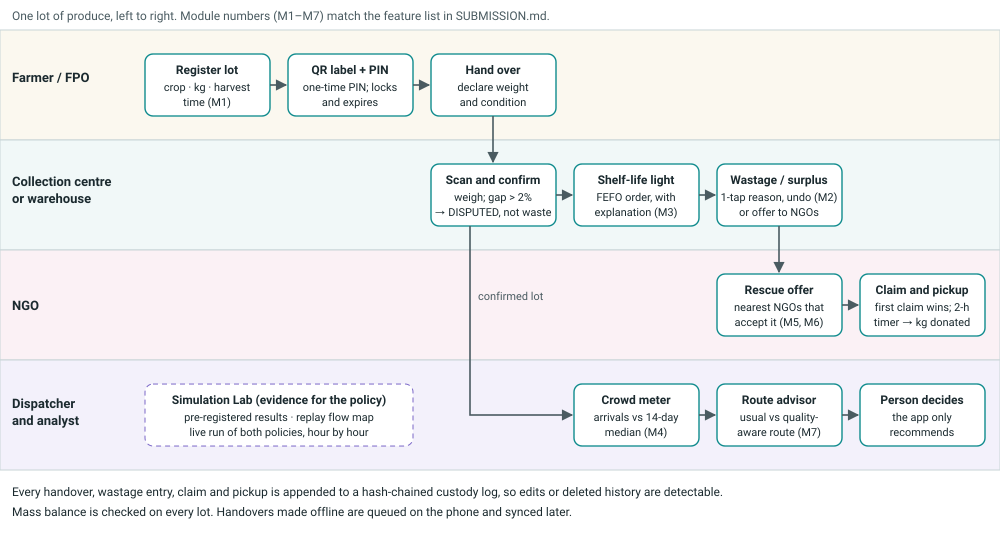
One lot, step by step
Farmer / FPO registers a lot (crop, kg, harvest time). The app prints a QR label and a one-time PIN.
The PIN works only with that lot's code, locks after five wrong tries and expires.
Handover. The farmer declares weight and condition. The collection-centre supervisor scans the QR, weighs the
lot and confirms. Both sides must act. If the weights differ by more than 2%, the lot is marked disputed,
never silently booked as waste.
Storage. The warehouse or collection centre sees every lot as a green / amber / red shelf-life light, sorted
first-expiring-first-out. How is this calculated? shows every input and whether it is real or assumed.
Wastage or surplus. A supervisor logs wastage with a reason in one tap, with an undo window. Produce that
will not sell is offered to the nearest NGOs that accept that crop and have capacity.
NGO rescue. The first NGO to claim wins and gets a two-hour pickup timer. Pickup is another two-party
handover, and the kilograms are booked as donated, not wasted.
Dispatcher. Before sending a load, the dispatcher checks the crowd meter, which compares today's arrivals with
the market's usual 14-day median. The Route advisor then compares the usual route with a quality-aware option.
The app recommends; the person decides.
Analyst. The Simulation Lab shows the pre-registered results, a map replay of both policies, and a live
side-by-side run.
Offline: handovers made without signal are queued on the phone and synced later. Languages: English, Hindi, Marathi
(machine drafts awaiting native review).
4. Architecture
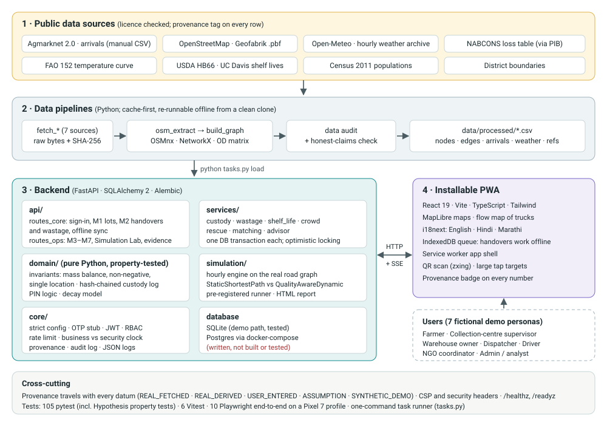
Layer
What it does
Built with
Data pipelines
Fetch, checksum and clean public data; build the road graph and travel-time matrix; audit gaps
Remaining life comes from a sourced reference shelf life and FAO's rule that deterioration roughly doubles to
triples for every 10 °C, using replayed hourly weather for the lot's location.
How is this calculated? lists every input with its provenance and the low and high bounds. It states plainly that
this is a model, not a food-safety certificate.
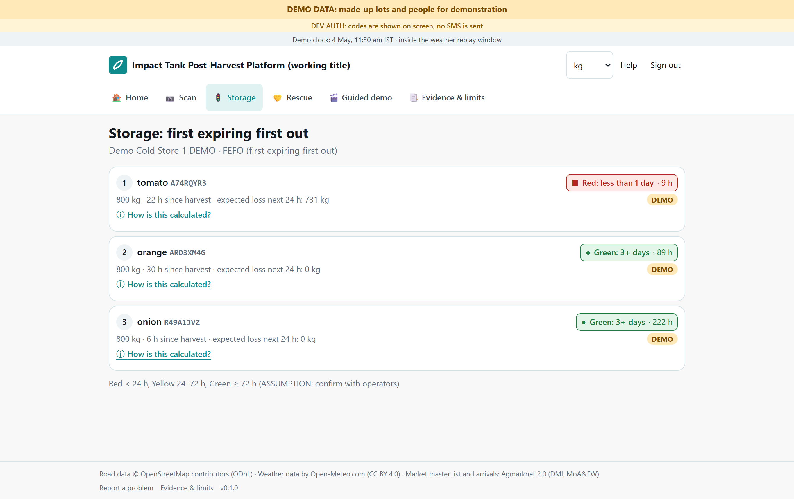
M3: storage view, sorted first-expiring-first-out
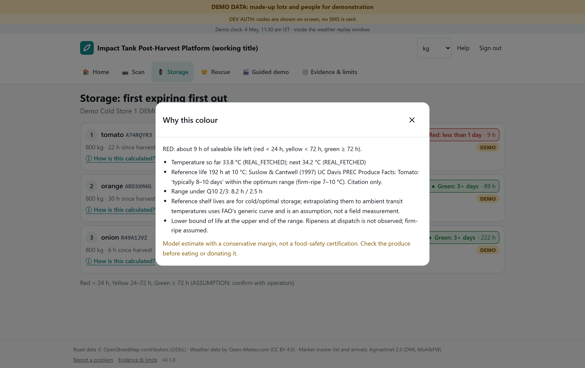
M3: every input behind the estimate, with its provenance
M4 · Mandi crowd meter
Shows today's reported arrivals divided by the market's trailing 14-day median, from Agmarknet.
It never says "% full", because no market capacity data exists. Markets that did not report show "no data" and
are never filled in.
When a market is unusually busy, the app suggests nearby markets that have data, with the road time to each.
M5 / M6 · NGO rescue and redistribution matching
Surplus is offered in waves to the nearest suitable NGOs. Matching uses road time, remaining shelf life and capacity
fit, and the score breakdown is shown.
The first claim wins, enforced in the database (tested with two NGOs claiming at the same moment). The winner gets a
two-hour pickup timer; if it expires, the offer goes to the next wave.
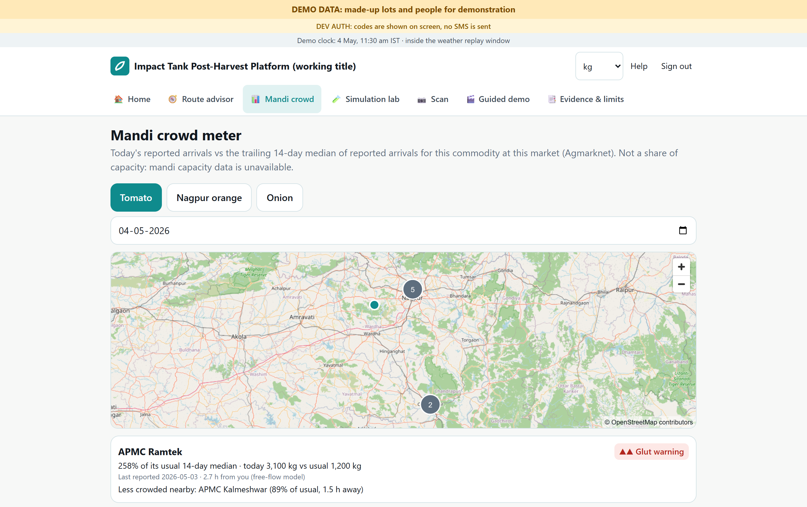
M4: mandi crowd meter
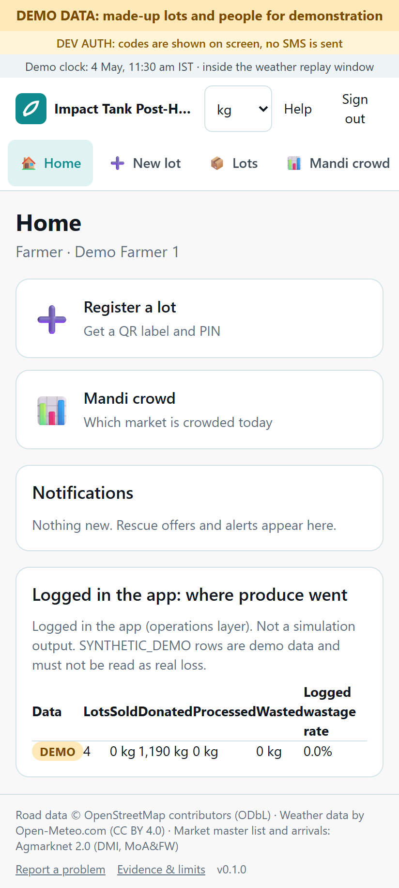
Farmer home screen
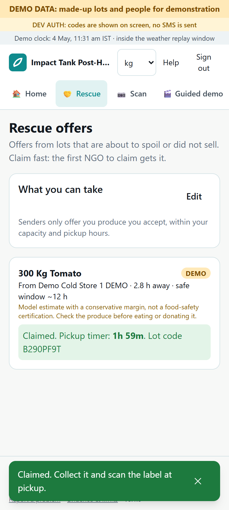
M5: NGO claim with a pickup timer
M7 · Route advisor
For one load, compares the usual static shortest route with the quality-aware option. Shows predicted quality on
arrival with Q10 bounds, kilograms likely left, the crowd at the destination and the road on a map.
Gives a recommendation with its reasons, for example keep the planned market, plus alerts. It never acts on its own.
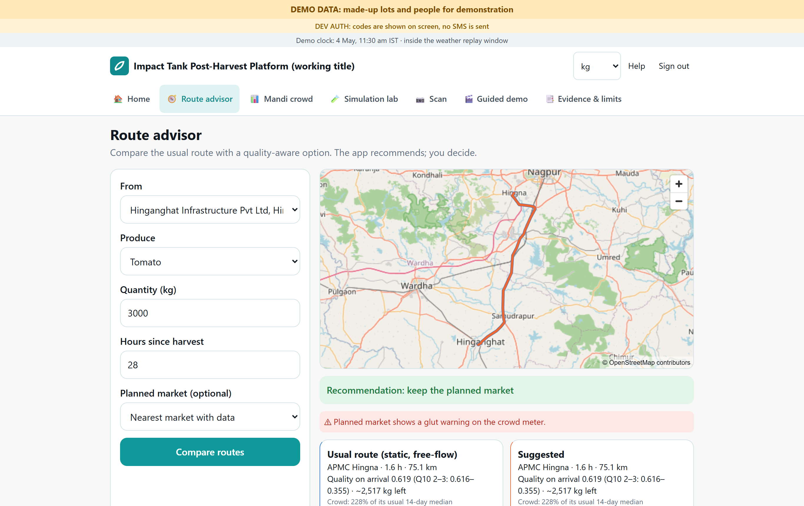
M7: route advisor
Simulation Lab: pre-registered results, flow-map replay and live run
Pre-registered results. Each season (summer, monsoon, winter) is run with 20 seeds. The policies get identical
lots, weather, roads and random draws; only the routing differs. The decision rule was committed before any
registered run (commit 5c840ce).
Replay on map. Both policies on the real map, hour by hour. Each truck is drawn with a line to its destination,
and a Busiest hour button jumps to the busiest moment.
Live run. Choose a start date, a number of days and a seed, and watch both policies run side by side, streamed
from the server. Wastage, unmet demand, a cumulative chart, a map you can scrub hour by hour, and a mass-balance
check every hour.
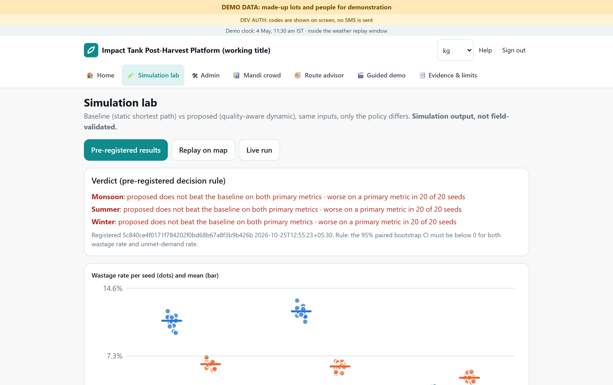
Pre-registered results and verdict
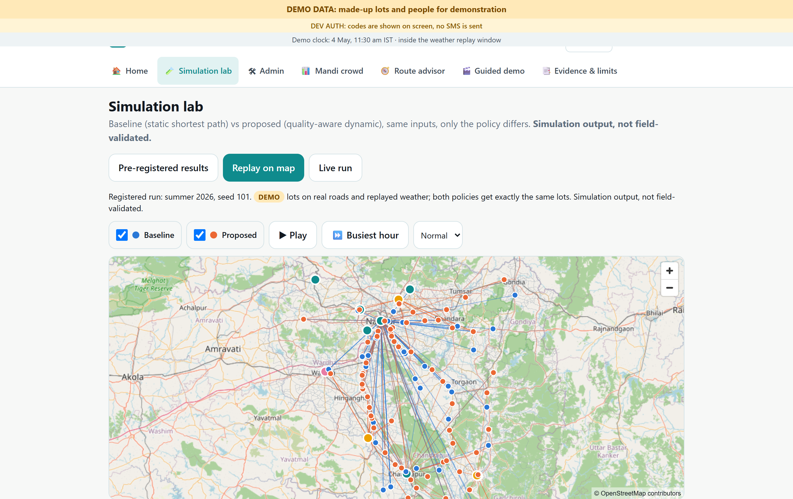
Replay: blue = baseline trucks, orange = proposed trucks; lines point to each truck's destination
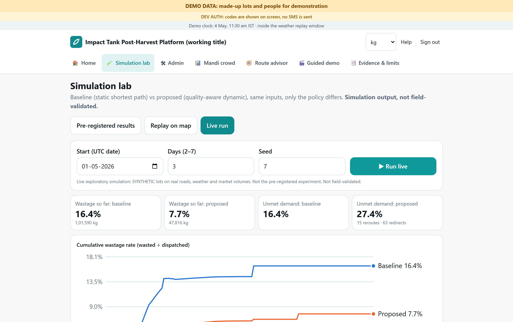
Live run: wastage and unmet demand as the run progresses (one exploratory 3-day run, not the registered experiment)
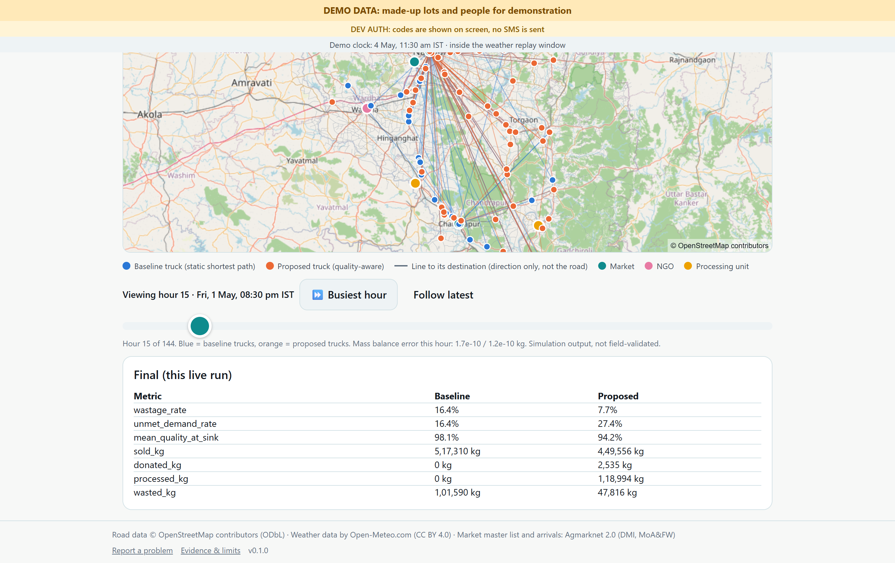
Live run map at its busiest hour, with the final table for that run
Built in from the start
Guided demo (/demo) walks through the whole story in six steps, signing in as fictional personas.
Evidence & limits page: every stakeholder claim with its source and tag (documented / interpretation / hypothesis),
and the list of limitations.
Provenance badges on every number; synthetic data is always badged DEMO, and a test enforces this.
Role-based access for seven roles, on-screen dev sign-in codes (no SMS), rate limiting, security headers, an audit
log, health checks, and a business clock that keeps the demo inside the weather-replay window.
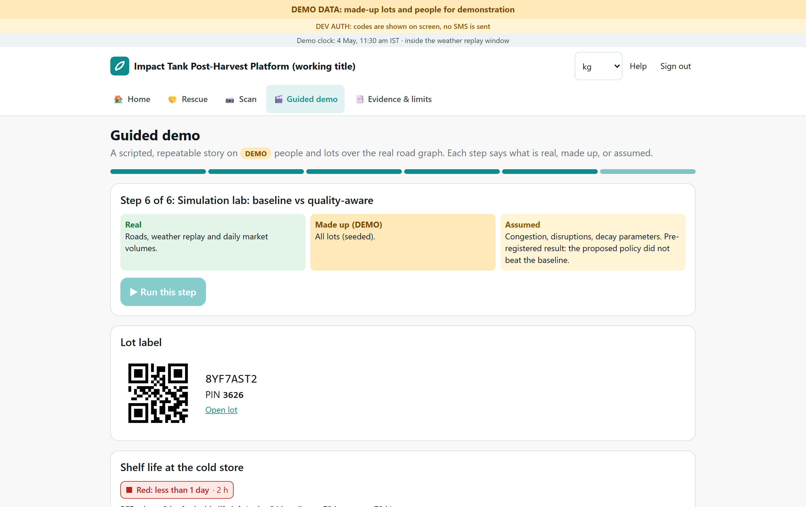
Guided demo
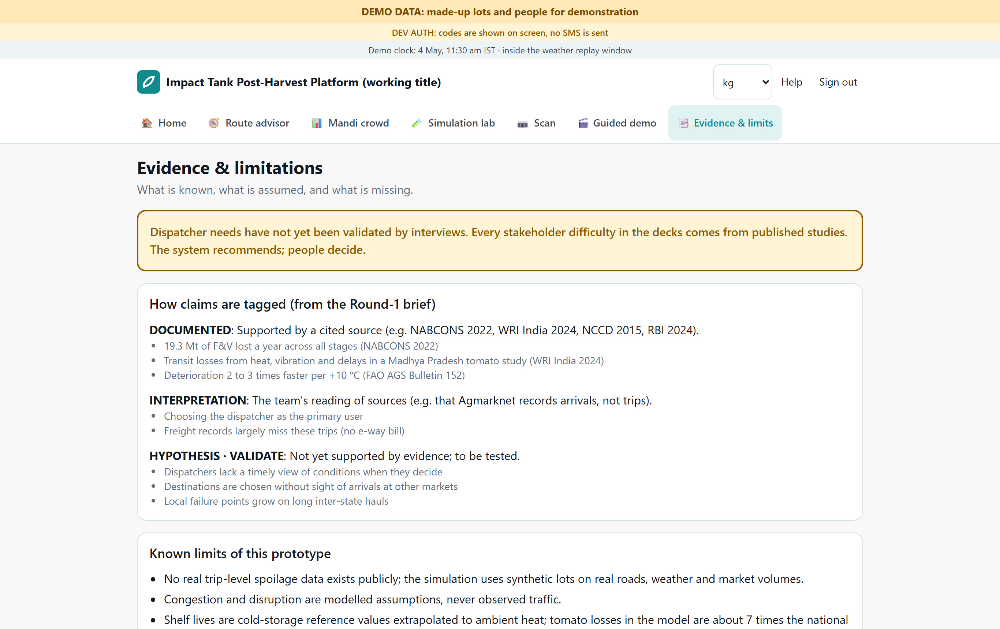
Evidence & limits page
6. Quality and testing (actual results)
Check
Result
Backend tests (pytest): unit tests; property tests for mass balance, non-negativity, the hash chain and single location; tamper detection; concurrency race; role-access matrix; PIN lockout; M3–M7; pipelines; simulation determinism
105 passed
Frontend unit tests (Vitest), including "synthetic data is always badged"
6 passed
End-to-end (Playwright, Pixel 7 profile in Chrome): onboarding for 4 roles, QR handshake, wastage and undo, two NGOs claiming at once, offline handover then sync, guided demo, evidence page
10 passed
Type checks and lint (mypy, ruff, tsc, eslint)
clean
Dependency audit (npm audit, pip-audit)
0 known vulnerabilities
Reproducibility: registered runs re-run in a fresh process
event-log SHA-256 matches
Lighthouse, mobile, welcome page (localhost)
Performance 82 · Accessibility 100 · Best Practices 82 · SEO 100
7. What the simulation found
The pre-registered rule: the proposed policy "beats" the baseline only if it lowers wastage without raising unmet
demand, judged by a paired bootstrap over 20 seeds per season.
Season
Wastage, baseline → proposed
Unmet demand, baseline → proposed
Verdict
Summer
12.1% → 6.2%
12.1% → 24.0%
does not beat baseline
Monsoon
11.1% → 6.4%
11.1% → 19.4%
does not beat baseline
Winter
2.8% → 5.0%
2.8% → 22.8%
does not beat baseline (worse on both)
All differences are outside their 95% confidence intervals, and unmet demand is higher in all 20 seeds of every
season. Simulation output, not field-validated. The quality-aware policy moves produce that is at risk towards
processing units and NGOs. That cuts recorded waste but leaves markets short. Four sensitivity variants and three
post-hoc variants show the same trade-off. We claim no reduction in loss, and we do not use the provisional 14%
figure from earlier decks.
The useful outcome is that the routing objective must make this trade-off explicit, or leave it as the dispatcher's
choice, before anyone uses the routing in the field.
8. Known limitations
Evidence and users
Dispatcher, supervisor and NGO needs have not been validated by interviews. Stakeholder difficulties come from
published studies, and each is tagged on the Evidence page.
There is no real trip-level data. The simulation runs synthetic lots on real roads, real weather and real market
volumes.
Model
Decay levels are uncertain. Reference shelf lives are cold-storage values extrapolated to ambient heat with FAO's
generic curve. Simulated tomato loss (23.7%) is far above the NABCONS market-level figure (3.25%), and our own
plausibility check flags it.
Congestion and disruptions are modelled assumptions, not observed traffic, and 94% of road speeds are road-class
defaults.
The value weights for market, NGO and processing outcomes are assumptions, and they drive the trade-off in section 7.
Data
Agmarknet arrivals come from manual exports (the site uses a captcha). Only the Nagpur and Chandrapur districts
report the pilot crops, and orange has no arrivals from May to August.
21 of 57 markets are waiting for a human to review their location. Until then, town centres stand in for market yards.
No capacity data exists for markets, cold storage or NGOs. That is why the crowd meter is relative, never "% full".
Weather is one gridded point per district, not the temperature inside the truck. Populations are from Census 2011.
Product
Sign-in is a development stub: codes are shown on screen and no SMS is sent.
Hindi and Marathi text is machine-drafted and needs native review.
The Postgres / Docker deployment files were written but not built or tested; only the SQLite path is tested.
The rate limiter works for a single server only.
Legal
The free Open-Meteo API and public OSM map tiles are for non-commercial use, which fits this research prototype.
Road data derived from OSM is under the ODbL licence.
Food-donation liability and data protection need review by qualified people before any pilot.
The full list is in docs/LIMITATIONS.md; every assumption is in docs/ASSUMPTIONS.md.
9. How to run it
Requirements: Python 3.11, Node 22, Git. No API keys and no Docker.
python tasks.py setup # creates .venv from the lock file and runs npm ci (about 3.5 minutes)
python tasks.py demo # loads committed data into SQLite and serves http://localhost:8000
Open http://localhost:8000/demo for the guided demo. Demo phone numbers are +910000000001 (farmer) to
+910000000007 (admin / analyst); the sign-in code appears on screen. To run the tests:
python tasks.py test and python tasks.py e2e. To regenerate these screenshots: python tasks.py capture.
A clean clone was verified end to end on 25 October 2026.
10. Built during the competition period
The repository's first commit (24 October 2026, 19:26 IST) holds the project scaffold (task runner, config, CI) and
the Round 1 materials (problem brief, solution deck, source register). The data pipelines, domain model, simulation
and app were all written after it:
Flow-map visualisation in the Simulation Lab; Stage 3 package
Raw data downloads carry their own fetch timestamps in data/raw/*/MANIFEST.json (24–25 October 2026). Run
git log --format="%h %ad %s" --date=iso in the repository to check this table.
11. Next steps, from prototype to pilot
Interview 10–15 dispatchers, supervisors and NGO coordinators in the Nagpur and Chandrapur mandis, and test the
hypotheses the decks tagged as unvalidated.
Rework the routing objective. Make the waste-versus-unmet-demand trade-off explicit (or a dispatcher setting),
pre-register again, and re-run.
Collect field data with the operations layer at 2–3 collection centres: handover weights and times, wastage
reasons, and a few temperature loggers in trucks. This calibrates decay and speeds.
Get approvals and partners: APMC consent, NGO agreements and a food-donation legal review, a data-protection
review, an SMS provider, and a licensed weather source for any commercial use.